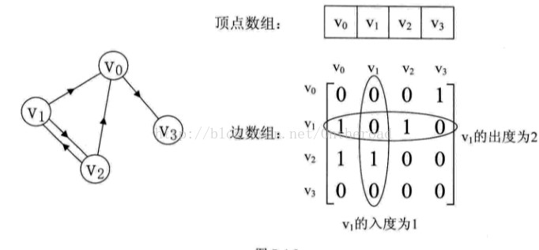
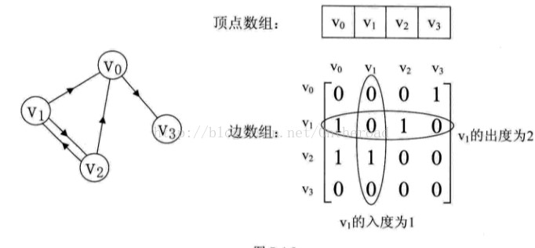

图的概念
图就是顶点与边的有穷集合。边可分为有向边与无向边，所以图可以分为有向图与无向图。
图中，与边相关的数叫做权，带权的图叫做网，即标出两点间距离的图。顶点边的数目叫做度，有向图中，
顶点入边的数目叫做入度，顶点出边的数目叫做出度，入度之和等于出度之和等于边的总数。
顶点：图中的数据元素。线性表中我们把数据元素叫元素，树中将数据元素叫结点。
边：顶点之间的逻辑关系用边来表示，边集可以是空的。
无向边：若顶点a到b之间的边没有方向，则称这条边为无向边。
无向图：图中任意两个顶点之间的边都是无向边。
有向边：若从顶点V1到V2的边有方向，则称这条边为有向边，
有向图：图中任意两个顶点之间的边都是有向边。
简单图：图中不存在顶点到其自身的边，且同一条边不重复出现。
有向完全图：有向图中，任意两个顶点之间都存在方向互为相反的两条弧，
无向完全图：无向图中，任意两个顶点之间都存在边，
权：与图的边或弧相关的数。
网：带权的图。
度：无向图中，与顶点V相关联的边的数目。有向图中，
入度表示指向自己的边的数目，出度表示指向其他边的数目，该顶点的度等于入度与出度的和。
路径的长度：一条路径上边或弧的数量。
图的子图就是原图的一部分。
图的路径是从一个顶点到另一个顶点的顶点系列，路径长度就是路径上经过的边的数目。起点与终点相同的路径叫做回路。
连通图：任意两点都连通的无向图叫做连通图。
强连通图：任意两点都连通的有向图叫做强连通图。
最小生成树：连通图的所有生成树中权值之和最小的生成树。
生成森林：无向非连通图中，每一个连通分量都有一颗生成树，就构成了森林。
图的邻接表示法
邻接矩阵表示法：对每一个顶点编号，若顶点数为n，则构造一个n*n的矩阵，第一行表示顶点1，用0表示非连接，1表示连接。
带权图就是用权代替1,0用无穷大代替。
邻接矩阵的优缺点:简单、直观、易于理解;方便检查任何一对顶点之间是否存在边;方便计算任一顶点的度;
方便求取任一顶点的所有邻接点；浪费空间:存稀疏图时有大量无效的0元素；浪费时间:统计稀疏图中的总边数。
无向图邻接矩阵表示方法：

有向图邻接矩阵表示方法：

邻接表表示法：采用链式存储结构，顶点的邻接表由顶点的所有邻接点构成，图的邻接表由所有顶点的邻接表构成。
有向图的邻接表与逆邻接表：顶点的链表只包含入度的叫邻接表，只包含出度的叫逆邻接表。
有向图邻接表表示方法：

无向图邻接表表示方法：

邻接表的存储空间
对于有n个顶点e条边的有向图，用邻接表或逆邻接表存储需（n+e）个单元；
对于有n个顶点e条边的无向图，用邻接表存储需用（n+2e）个单元。
结论
无向图的邻接表中，表结点个数为其边数的2倍，比为偶数。
若已知n个结点e条边的图，其邻接表中表结点的个数为奇数，则该图一定为有向图。
图的遍历
图的遍历分为深度优先和广度优先两种。
深度优先遍历的思想:
刚开始时，图中所有的顶点都没有访问，首先从图的某一个顶点V0出发，访问此顶点，然后依次从V0的未被访问的邻接点出发，
深度优先遍历图，直至图中所有和V0相通的顶点都被访问到，若此时图中还有未被访问的顶点，则另选图中一个未被访问的顶点作起点，
重复上述过程，直至图中所有顶点都被访问为止。
图的广度优先搜索遍历基本思想:
首先从图的某一个顶点V0出发，访问该顶点后;依次访问V0的各个未曾访问过的邻接点，然后分别从这些邻接点出发，
依次访问他们的邻接点，并按这些顶点被访问的次序来依次访问他们的邻接点;重复上述过程，直到图中所有顶点都被访问为止。
普利姆最小生成树方法（Prim算法）
Prim算法基本思想
（1）将图中的顶点分成两个不同的顶点集S与V-S，将初始点加入到S集中；
（2）在横跨两个不同顶点集的边中选择一条权值最小的边加入到生成树中；
（3）将该边的另一点加入到顶点集S中，并从V-S中删除；
（4）重复步骤2-3，直到V-S为空。
Prim算法边的选择
（1）设置数组[closest[j]]；
（2）j属于V-S顶点集中的顶点；
（3）定义[closest[j]为j在S中的一个邻接点，且j到[closest[j]的距离最小。
Prim算法的基本步骤
（1）划分顶点集为S何V-S；
（2）对于j∈V-S，定义closest[j]={k|min{c[i][k]|k∈S,j∈V-S}};
（3）选择：针对k∈V-S，选择j={k|min{c[k][closest[k]]}};
（4）修改：针对k∈V-S，修改其为closest[k];
（5）重复3-4步骤，直到V-S=φ。
Prim算法的初始化
（1）除出发点V外，其余顶点均在V-S集中；
（2）其余顶点的closest值均为出发点V;
克鲁斯卡尔最小生成树算法（Kruskal算法）
Kruskal算法基本思想
（1）把图中的顶点看成n个不同的顶点集，每个顶点集都只含有1个顶点；
（2）每次都在横跨不同顶点集的边中选择一条权值最小的边加入到最小生成树中；
（3）直到图中所有的顶点都在同一个顶点集中为止。
Kruskal算法求解思路
（1）连通图的边按照权值从小到大进行排列；
（2）依次检查它的每条边对应的两个端点是否分别属于两个不同的顶点集，是，
则加入生成树中，不是，则不加入生成树中。
拓扑排序
基本概念
有向无环图：一个无环的有向图；其作用是描述一项工程或系统的进行过程。
AOV网：顶点表示活动，用有向边表示活动之间的优先关键的有向图。
（1）不允许出现环，这意味着某项活动应以自己为先决条件；
（2）若是图中有向边，则Vi是Vj的直接前驱，Vj是Vi的直接后继。
拓扑排序：将AOV网中所有的顶点按照他们之间的相互关系的优先顺序排成一个线性序列的过程。
拓扑序列：拓扑排列所得到的序列。
拓扑排序方法
（1）在有向图中选一个没以前驱的顶点且输出；
（2）从图中删除该顶点和所有以它为尾的弧；
（3）重复上述两步，直到全部顶点均已经输出；或者当图中不存在无前驱的结点为止。
拓扑排序的过程就是判断一个图是否有环的过程。
图的最短路径问题
最短路径：源点与终点之间权值最小的路径。
单源最短路径问题：从某个固定源点出发，求这个源点到其他所有项点的最短距离。
多源最短路径问题：求任意两个顶点之间的最短距离。
Dijkstra算法
按照路径长度递增（非递减）的顺序产生最短路径。迪杰斯特拉算法适用于有向图和无向图。
其具体过程为：
（1）dist[1] V0到此顶点的最小路径长度；
（2）dist[2] dist[3] dist[4] dist[5] dist[6]只能以S中的顶点作为中转而形成的路径中长度最短的路径长度。
注意：保持从V0 到集合S中各顶点的最短路径长度都不可大于从V0到集合V-S中的任何顶点的最短路径长度。
多源路径问题
方法1：把单元最短路径算法调用v次，但是对于稠密图来讲效率不高；
方法2：Floyd算法。特点：每一条最短路径不是一次确定，而是逐步形成，适用于用邻接矩阵存储的稠密图的多源路径最短问题。
图的概念
图就是顶点与边的有穷集合。边可分为有向边与无向边，所以图可以分为有向图与无向图。 图中，与边相关的数叫做权，带权的图叫做网，即标出两点间距离的图。顶点边的数目叫做度，有向图中， 顶点入边的数目叫做入度，顶点出边的数目叫做出度，入度之和等于出度之和等于边的总数。
顶点：图中的数据元素。线性表中我们把数据元素叫元素，树中将数据元素叫结点。
边：顶点之间的逻辑关系用边来表示，边集可以是空的。
无向边：若顶点a到b之间的边没有方向，则称这条边为无向边。
无向图：图中任意两个顶点之间的边都是无向边。
有向边：若从顶点V1到V2的边有方向，则称这条边为有向边，
有向图：图中任意两个顶点之间的边都是有向边。
简单图：图中不存在顶点到其自身的边，且同一条边不重复出现。
有向完全图：有向图中，任意两个顶点之间都存在方向互为相反的两条弧，
无向完全图：无向图中，任意两个顶点之间都存在边，
权：与图的边或弧相关的数。
网：带权的图。
度：无向图中，与顶点V相关联的边的数目。有向图中， 入度表示指向自己的边的数目，出度表示指向其他边的数目，该顶点的度等于入度与出度的和。
路径的长度：一条路径上边或弧的数量。
图的子图就是原图的一部分。
图的路径是从一个顶点到另一个顶点的顶点系列，路径长度就是路径上经过的边的数目。起点与终点相同的路径叫做回路。
连通图：任意两点都连通的无向图叫做连通图。
强连通图：任意两点都连通的有向图叫做强连通图。
最小生成树：连通图的所有生成树中权值之和最小的生成树。
生成森林：无向非连通图中，每一个连通分量都有一颗生成树，就构成了森林。
图的邻接表示法
邻接矩阵表示法：对每一个顶点编号，若顶点数为n，则构造一个n*n的矩阵，第一行表示顶点1，用0表示非连接，1表示连接。
带权图就是用权代替1,0用无穷大代替。
邻接矩阵的优缺点:简单、直观、易于理解;方便检查任何一对顶点之间是否存在边;方便计算任一顶点的度; 方便求取任一顶点的所有邻接点；浪费空间:存稀疏图时有大量无效的0元素；浪费时间:统计稀疏图中的总边数。
无向图邻接矩阵表示方法：
有向图邻接矩阵表示方法：

邻接表表示法：采用链式存储结构，顶点的邻接表由顶点的所有邻接点构成，图的邻接表由所有顶点的邻接表构成。
有向图的邻接表与逆邻接表：顶点的链表只包含入度的叫邻接表，只包含出度的叫逆邻接表。
有向图邻接表表示方法：
无向图邻接表表示方法：
邻接表的存储空间
对于有n个顶点e条边的有向图，用邻接表或逆邻接表存储需（n+e）个单元； 对于有n个顶点e条边的无向图，用邻接表存储需用（n+2e）个单元。
结论
无向图的邻接表中，表结点个数为其边数的2倍，比为偶数。
若已知n个结点e条边的图，其邻接表中表结点的个数为奇数，则该图一定为有向图。
图的遍历
图的遍历分为深度优先和广度优先两种。
深度优先遍历的思想:
刚开始时，图中所有的顶点都没有访问，首先从图的某一个顶点V0出发，访问此顶点，然后依次从V0的未被访问的邻接点出发， 深度优先遍历图，直至图中所有和V0相通的顶点都被访问到，若此时图中还有未被访问的顶点，则另选图中一个未被访问的顶点作起点， 重复上述过程，直至图中所有顶点都被访问为止。
图的广度优先搜索遍历基本思想:
首先从图的某一个顶点V0出发，访问该顶点后;依次访问V0的各个未曾访问过的邻接点，然后分别从这些邻接点出发， 依次访问他们的邻接点，并按这些顶点被访问的次序来依次访问他们的邻接点;重复上述过程，直到图中所有顶点都被访问为止。
普利姆最小生成树方法（Prim算法）
Prim算法基本思想
（1）将图中的顶点分成两个不同的顶点集S与V-S，将初始点加入到S集中；
（2）在横跨两个不同顶点集的边中选择一条权值最小的边加入到生成树中；
（3）将该边的另一点加入到顶点集S中，并从V-S中删除；
（4）重复步骤2-3，直到V-S为空。
Prim算法边的选择
（1）设置数组[closest[j]]；
（2）j属于V-S顶点集中的顶点；
（3）定义[closest[j]为j在S中的一个邻接点，且j到[closest[j]的距离最小。
Prim算法的基本步骤
（1）划分顶点集为S何V-S；
（2）对于j∈V-S，定义closest[j]={k|min{c[i][k]|k∈S,j∈V-S}};
（3）选择：针对k∈V-S，选择j={k|min{c[k][closest[k]]}};
（4）修改：针对k∈V-S，修改其为closest[k];
（5）重复3-4步骤，直到V-S=φ。
Prim算法的初始化
（1）除出发点V外，其余顶点均在V-S集中；
（2）其余顶点的closest值均为出发点V;
克鲁斯卡尔最小生成树算法（Kruskal算法）
Kruskal算法基本思想
（1）把图中的顶点看成n个不同的顶点集，每个顶点集都只含有1个顶点；
（2）每次都在横跨不同顶点集的边中选择一条权值最小的边加入到最小生成树中；
（3）直到图中所有的顶点都在同一个顶点集中为止。
Kruskal算法求解思路
（1）连通图的边按照权值从小到大进行排列；
（2）依次检查它的每条边对应的两个端点是否分别属于两个不同的顶点集，是， 则加入生成树中，不是，则不加入生成树中。
拓扑排序
基本概念
有向无环图：一个无环的有向图；其作用是描述一项工程或系统的进行过程。
AOV网：顶点表示活动，用有向边表示活动之间的优先关键的有向图。
（1）不允许出现环，这意味着某项活动应以自己为先决条件；
（2）若
拓扑排序：将AOV网中所有的顶点按照他们之间的相互关系的优先顺序排成一个线性序列的过程。
拓扑序列：拓扑排列所得到的序列。
拓扑排序方法
（1）在有向图中选一个没以前驱的顶点且输出；
（2）从图中删除该顶点和所有以它为尾的弧；
（3）重复上述两步，直到全部顶点均已经输出；或者当图中不存在无前驱的结点为止。
拓扑排序的过程就是判断一个图是否有环的过程。
图的最短路径问题
最短路径：源点与终点之间权值最小的路径。
单源最短路径问题：从某个固定源点出发，求这个源点到其他所有项点的最短距离。
多源最短路径问题：求任意两个顶点之间的最短距离。
Dijkstra算法
按照路径长度递增（非递减）的顺序产生最短路径。迪杰斯特拉算法适用于有向图和无向图。
其具体过程为：
（1）dist[1] V0到此顶点的最小路径长度；
（2）dist[2] dist[3] dist[4] dist[5] dist[6]只能以S中的顶点作为中转而形成的路径中长度最短的路径长度。
注意：保持从V0 到集合S中各顶点的最短路径长度都不可大于从V0到集合V-S中的任何顶点的最短路径长度。
多源路径问题
方法1：把单元最短路径算法调用v次，但是对于稠密图来讲效率不高；
方法2：Floyd算法。特点：每一条最短路径不是一次确定，而是逐步形成，适用于用邻接矩阵存储的稠密图的多源路径最短问题。